Galería
Un recorrido por Nabani
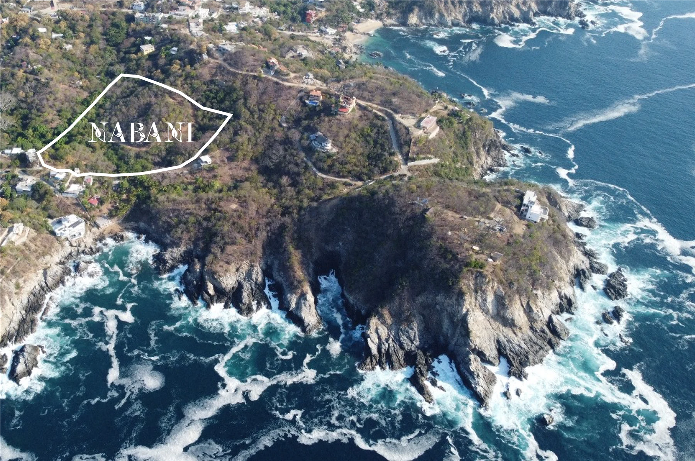
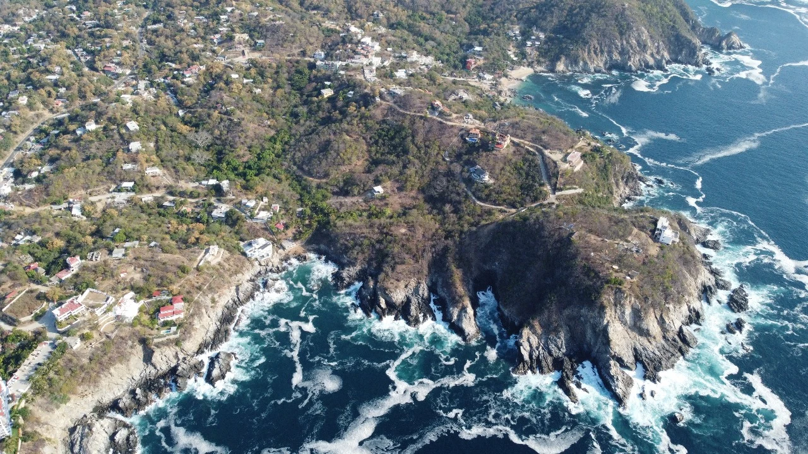
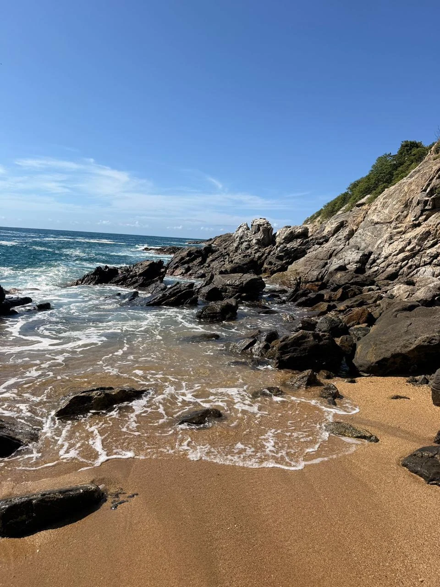
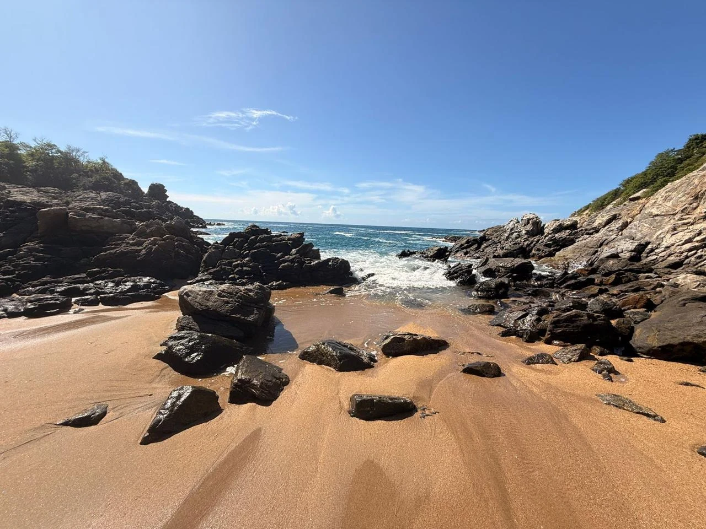
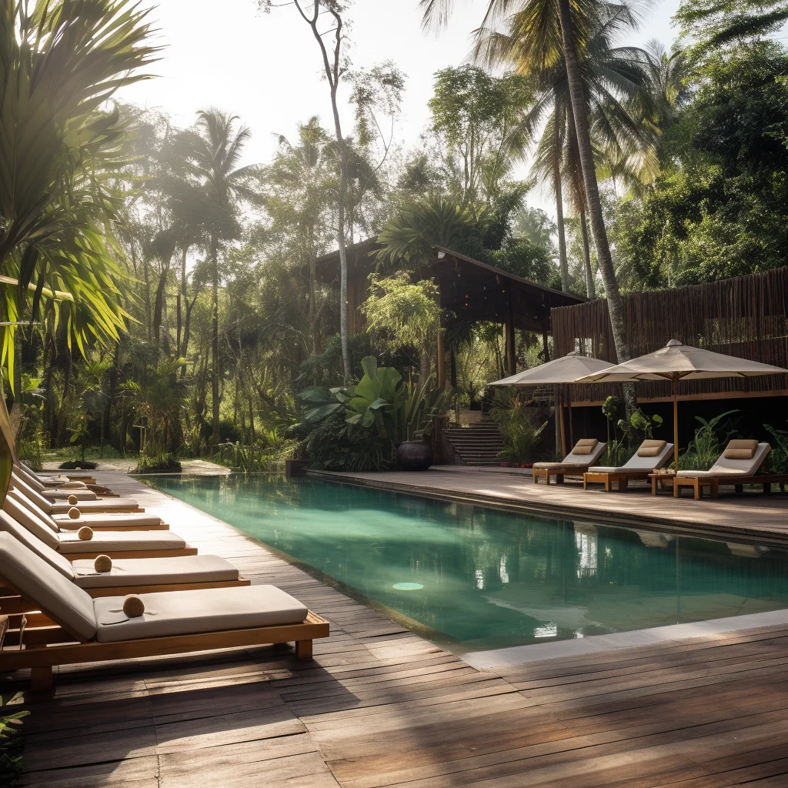
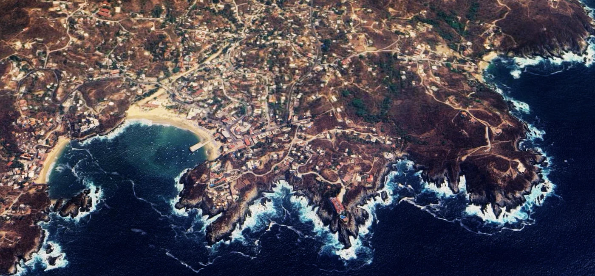


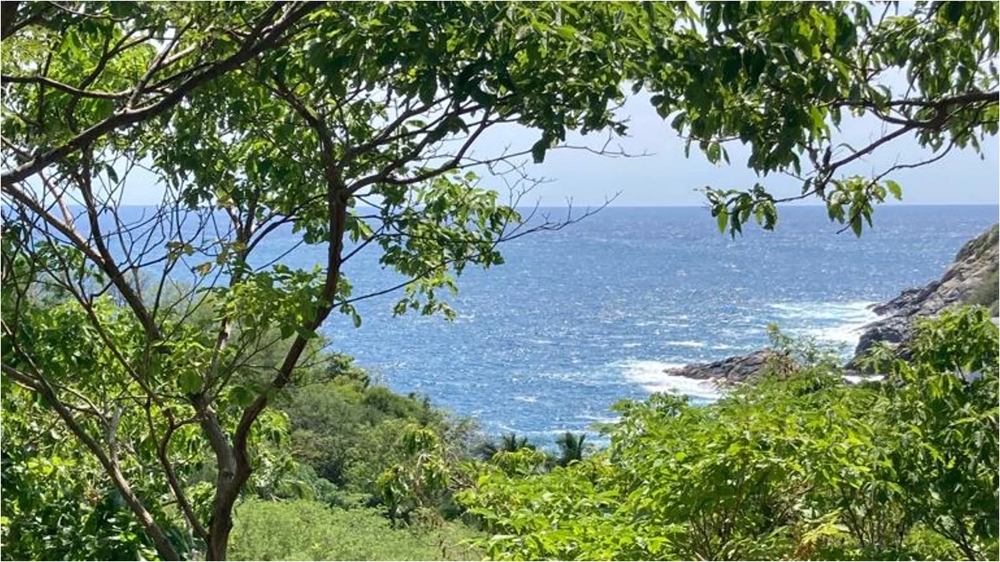
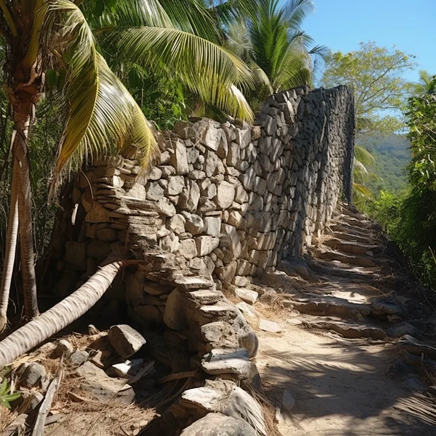
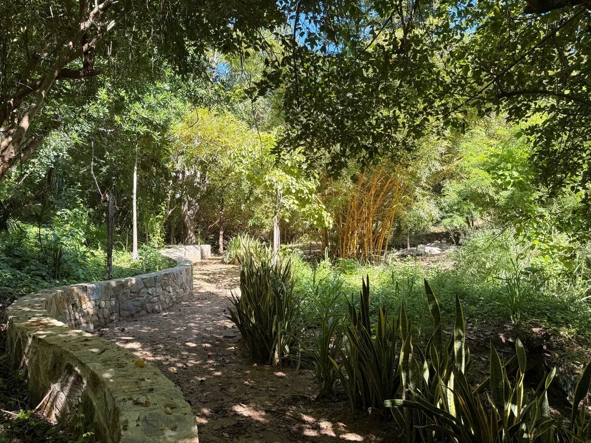
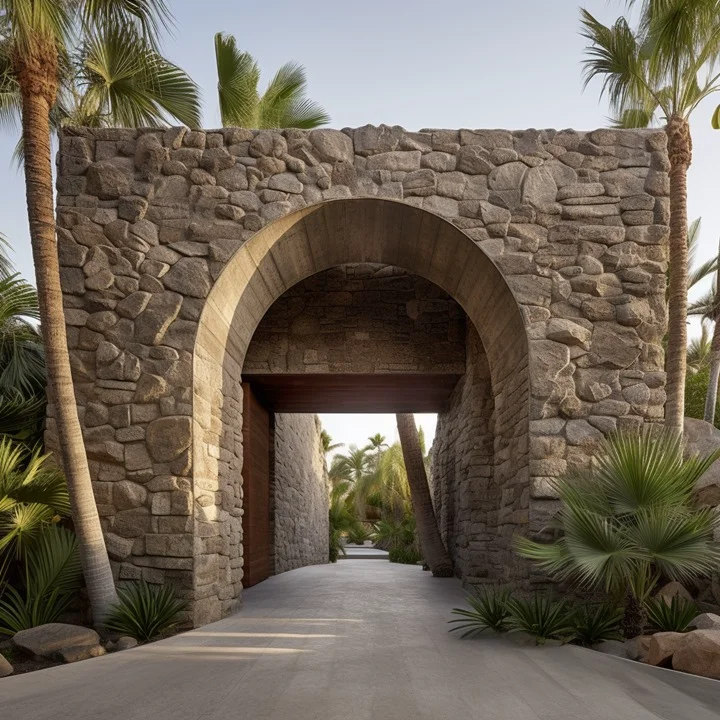

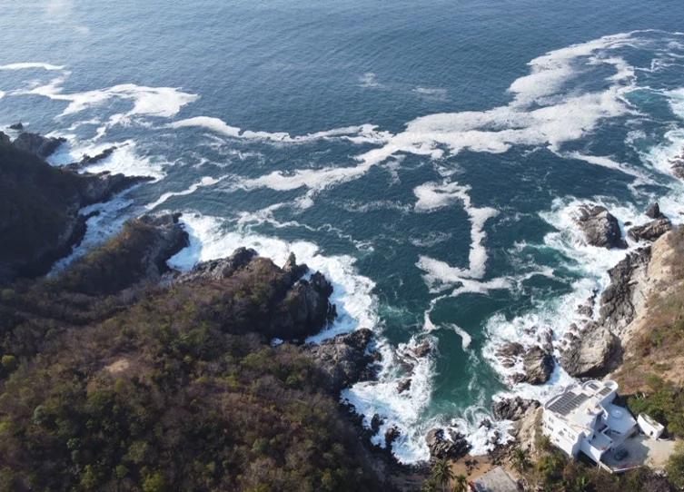
Nabani significa vida en zapoteco y da nombre a un proyecto de terrenos con vistas al océano y acceso caminando a distintas playas de Puerto Ángel. Un lugar para construir, vivir y echar raíces junto al mar.
Terrenos frente al mar donde la vida echa raíces.










Vista al océano desde tu terreno y playas caminando: Estacahuite, Aguete y Puerto Ángel.
Alberca, jardines tropicales y área de hamacas como extensión de tu casa.
Ideal para tu residencia frente al mar — o para construir y rentar en la zona más buscada de Puerto Ángel.
Caminando: Estacahuite, Aguete y la bahía de Puerto Ángel quedan a pocos minutos del terreno.
Sí. Todos nuestros proyectos incluyen acompañamiento legal completo y título de posesión en regla. Antes de firmar te explicamos cada documento, sin letra chica.
Sí, hay esquemas de enganche y mensualidades flexibles. Las condiciones exactas dependen del lote — un asesor te las confirma por WhatsApp.
¡Claro! Coordinamos tu visita por WhatsApp y te recibimos en la costa para que camines el terreno con nosotros.
Conoce los terrenos disponibles y las condiciones para construir tu residencia en Nabani.